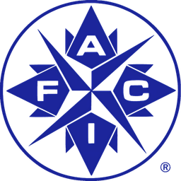

Name: José Antonio González Villalón
Role: Head of Corporate IT (CIO-track)
Company: Grupo Industrial Saltillo
Location: Monterrey, NL · México
Email: josegzzv@msn.com
Executive focus
IT Governance & StrategyExecutive profile
I lead the corporate IT function of a multinational industrial group, aligning technology strategy with business objectives. My focus is not code: it is IT governance, enterprise architecture and measurable value creation.
I am part of the Project Leader Team on a global SAP S/4HANA Private Edition implementation (SAP Activate), where I took part in the strategic selection assessment — platform benchmarking, functional fit, TCO/ROI, risk and change management — and lead the integration, development, BI and AI workstreams.
My technical credibility as a software and full-stack architect — with postgraduate specialization in Artificial Intelligence, Machine Learning and Deep Learning — lets me engage engineering teams and vendors as a peer and make sound technology decisions. I share that knowledge as an Adjunct Professor at Tecnológico de Monterrey.
I am looking to consolidate an organization's technology leadership as CIO / CDO / CAIO, accelerating its digitalization and turning IT into a competitive advantage.
Lidero la función corporativa de TI de un grupo industrial multinacional, alineando la estrategia tecnológica con los objetivos del negocio. Mi enfoque no es el código: es el gobierno de TI, la arquitectura empresarial y la creación de valor medible.
Formo parte del Project Leader Team de una implementación global de SAP S/4HANA Private Edition (SAP Activate), donde participé en el assessment estratégico de selección — benchmarking de plataformas, fit funcional, TCO/ROI, riesgos y gestión del cambio — y lidero los frentes de integraciones, desarrollos, BI e IA.
Mi credibilidad técnica como arquitecto de software y full-stack — con especialización de posgrado en Inteligencia Artificial, Machine Learning y Deep Learning — me permite dialogar de igual a igual con ingeniería y proveedores, y tomar decisiones tecnológicas sólidas. Comparto ese conocimiento como Profesor de Cátedra en el Tecnológico de Monterrey.
Busco consolidar el liderazgo tecnológico de una organización como CIO / CDO / CAIO, acelerando su digitalización y convirtiendo a TI en ventaja competitiva.
Expertise
Where I create value: leadership at the top, and enough technical depth to make the right calls.
Governance & Strategy
Business–IT alignment, digital transformation roadmap, enterprise architecture, IT budget governance (−10% operating costs, 99.99% availability) and vendor renegotiation with significant savings.
Data & Artificial Intelligence
BI and AI strategy with responsible adoption, backed by postgraduate programs in AI/ML, Deep Learning and Data Science (UT Austin – McCombs). Hands-on with neural networks, LLMs and agentic systems.
ERP & Enterprise Platforms
Global SAP S/4HANA Private Edition program (RISE, SAP Activate): selection assessment; integration, development, BI and AI workstreams on SAP BTP; Taulia and Concur. Legacy landscape on Oracle EBS with Oracle SOA Suite / EDI integration; Teamcenter PLM across six countries.
Cybersecurity, Compliance & Risk
Security by design and compliance as a management discipline: secure SDLC, OWASP and PCI DSS awareness, information-security frameworks (ISO 27001, TISAX, ISO 42001 for AI governance). Proven track record with the Mexican tax authority (SAT) as an Authorized Certification Provider (PAC) and banking certifications (E-Global, PROSA). Active IAFCI member.
Manufacturing & Industry 4.0
OT–IT convergence and shop-floor digitalization: data capture, process automation and operational data enabled for analytics and decision making. Global scale: multicultural teams across Europe, Asia and the Americas.
Software & Cloud Architecture
Full-stack architect background: .NET / C#, JavaScript, React and the MERN stack, scalable cloud applications, multi-tenant SaaS, CI/CD and DevSecOps. Enough depth to challenge designs and estimates credibly.
99.99
% AVAILABILITYCareer
From software architect to corporate IT leadership — always at the intersection of technology, compliance and business results.
-
Oct 2019 – Present
Head of Corporate IT (CIO-track) · Grupo Industrial Saltillo
Responsible for the corporate IT function — strategy, architecture, development, BI, databases and operations — leading a multidisciplinary team of 22 specialists and acting as technology counterpart to business leadership.
- Project Leader Team, global SAP S/4HANA Private Edition (SAP Activate): selection assessment; lead of integration, development, BI and AI workstreams.
- IT budget governance: −10% operating costs, 99.99% availability; Concur contract renegotiated (−61%) with full functional scope.
- Teamcenter PLM rollout across Spain, Italy, Czech Republic, Poland, China and Mexico.
- Shop-floor digitalization (OT–IT / Industry 4.0), e-invoicing, middleware, mobile/web applications under a standardized agile model; secure SDLC standards.
Responsable de la función corporativa de TI — estrategia, arquitectura, desarrollo, BI, bases de datos y operaciones — liderando un equipo multidisciplinario de 22 especialistas y ejerciendo la interlocución tecnológica con la dirección del negocio.
- Project Leader Team, SAP S/4HANA Private Edition global (SAP Activate): assessment de selección; líder de los frentes de integraciones, desarrollos, BI e IA.
- Gobierno del presupuesto de TI: −10% en costos operativos, 99.99% de disponibilidad; renegociación del contrato de Concur (−61%) preservando el alcance funcional.
- PLM Teamcenter en España, Italia, República Checa, Polonia, China y México.
- Digitalización de piso de planta (OT–TI / Industria 4.0), facturación electrónica, middleware y aplicaciones móviles/web bajo un modelo ágil estandarizado; estándares de SDLC seguro.
-
Sep 2023 – Present
Adjunct Professor · Tecnológico de Monterrey
School of Engineering and Sciences, Computer Science Department: Business Analytics Platforms, Requirements Analysis, Process Design and Enterprise Architecture. Industry partner (Socio Formador) representing GIS.
Escuela de Ingeniería y Ciencias, Departamento de Computación: Plataformas de Analítica de Negocios, Análisis de Requerimientos, Diseño de Procesos y Arquitectura Empresarial. Socio Formador en representación de GIS.
-
Jun 2016 – Oct 2019
Head of Software Architecture & Delivery · Access Box Solutions (assigned to GIS)
Ran the software factory, analytics/BI, database and middleware teams (8 professionals). Delivered CFDI 3.3 invoicing and payroll, the Vitromex dealer portal and back-office platforms; founded the SWAT rapid-delivery team; led SharePoint, SOA, EDI and .NET teams.
Administré la fábrica de software y los equipos de analítica/BI, bases de datos y middleware (8 profesionales). Entregué facturación y nómina CFDI 3.3, el portal de distribuidores Vitromex y aplicativos de backoffice; fundé el equipo SWAT de entrega rápida; lideré equipos SharePoint, SOA, EDI y .NET.
-
Jul 2015 – May 2016
IT Director · Operadora Regia (DETECNO)
Led the SAT recertification as Authorized Certification Provider (PAC), built the governance, risk and compliance policies it required, cut infrastructure costs and launched a professional development program for the IT team.
Dirigí la recertificación ante el SAT como PAC, construí las políticas de gobierno, riesgo y cumplimiento requeridas, reduje costos de infraestructura e instauré un programa de desarrollo profesional para el equipo de TI.
-
Jul 2013 – Jun 2015
Software Architect · Grupo Industrial Saltillo
End-to-end implementation of Oracle SOA Suite; SOA and EDI integration standards; XBRL financial reporting; Dynamics CRM implementation team; +5 points in the Great Place to Work – IT score.
Implementación completa de Oracle SOA Suite; estándares de integración SOA y EDI; reporteo financiero XBRL; equipo de implementación de Dynamics CRM; +5 puntos en la calificación Great Place to Work – TI.
-
2005 – 2013
Earlier leadership & architecture roles · INCOPTI · Grupo AGM · Tesis Automation & IT · Deintec · Depilite
Banner ERP implementation for Tecnológico de Monterrey; architecture of the ANTAD electronic platform and an ISO 8583 transactional gateway with bank certifications (E-Global, PROSA); manufacturing framework for Ternium; point-of-sale platform with centralized bank payment integration across 200+ branches in 7 countries, delivering significant monthly savings.
Implementación del ERP Banner para el Tecnológico de Monterrey; arquitectura de la plataforma electrónica ANTAD y de un gateway transaccional ISO 8583 con certificaciones bancarias (E-Global, PROSA); framework de manufactura para Ternium; plataforma de punto de venta con integración centralizada de pagos bancarios en +200 sucursales de 7 países, generando ahorros mensuales significativos.
Education & Credentials
Executive education and postgraduate specialization in AI, Data Science and Cloud Software — on top of an MBA in IT Management.
Academic
-
UT2025
PGP in Artificial Intelligence & Machine Learning – Deep Learning Specialization The University of Texas at Austin · McCombs School of Business Neural networks, CNNs, RNN/LSTM, transfer learning, TensorFlow / Keras / PyTorch, model deployment.
-
UT2025
PGP in Data Science & Business Analytics The University of Texas at Austin · McCombs School of Business Predictive modeling, ML applied to finance, marketing, operations and supply chain; Python, SQL, Tableau, Power BI.
-
UT2024
PGP Full Stack Software Development: Building Scalable Cloud Applications The University of Texas at Austin · McCombs School of Business
-
MIT2024
Professional Certificate — Full Stack Development with MERN Massachusetts Institute of Technology (MIT xPRO)
-
TM2017
MBA — Information Technology Management Universidad Tecmilenio
-
UR2002
B.Eng. Information Systems Universidad Regiomontana
Executive education & memberships
-
 EG2022
Leadership in the Digital Era EGADE Business School · Tecnológico de Monterrey
EG2022
Leadership in the Digital Era EGADE Business School · Tecnológico de Monterrey -
EG2021
Digital Strategy & Transformation · Global Environment & Technology Innovation Trends EGADE Business School · Tecnológico de Monterrey
-
TEC2021
Digital Transformation as Business & Innovation Strategy Tecnológico de Monterrey
-
M32021
Management 3.0 — Fundamentals Workshop Management 3.0
-

IA2024IAFCI & CCROC Training — Financial Crimes Investigations International Association of Financial Crimes Investigators · active member
Hands-on Lab
A few small JavaScript exercises from my MIT full-stack program. I keep them here as a reminder that I still enjoy building — and that I can read the code my teams write.
{kind=link}
{kind=link}
{kind=link}